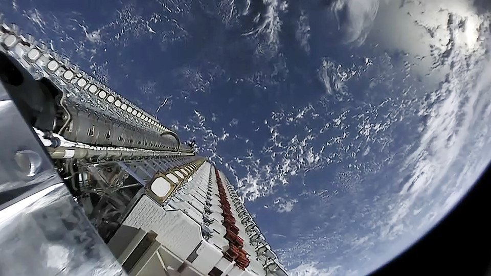
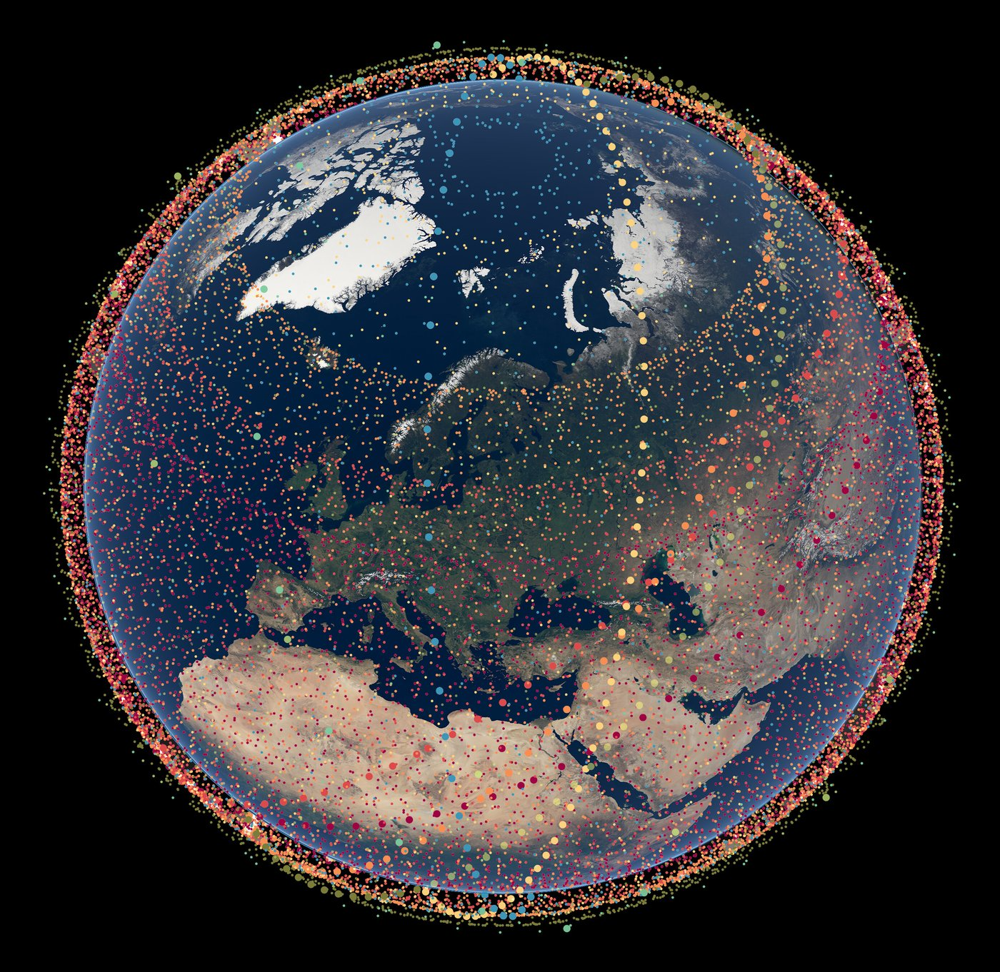
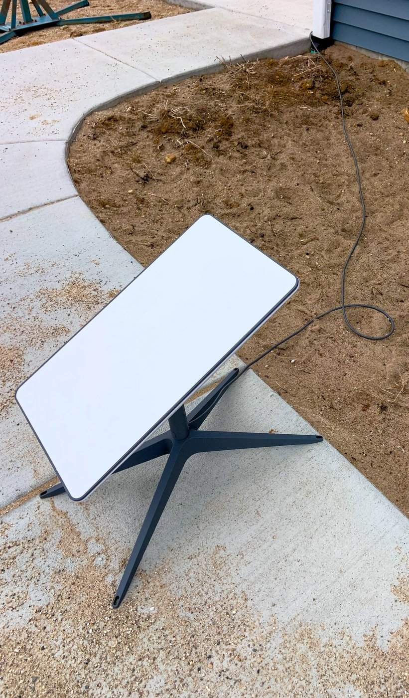

Nel pomeriggio dell’8 ottobre 2026 SpaceX comunica di aver raggiunto un accordo definitivo per acquisire l’intero portafoglio nazionale di licenze a 800 MHz di Grain Management. Non è un aggiornamento tecnico sui lanci né un nuovo volo di Starship: è un pezzo di infrastruttura radio che l’azienda presenta come decisivo per far diventare Starlink Mobile un operatore mobile a pieno titolo negli Stati Uniti, capace di competere con Verizon, AT&T e T-Mobile invece di restare un’estensione satellitare della rete di qualcun altro.
Che cosa ha annunciato SpaceX
Il comunicato ufficiale è netto: SpaceX ha firmato un accordo per acquisire un portafoglio nazionale di spettro low-band che, nelle parole dell’azienda, aprirà la strada a Starlink perché diventi «un grande operatore mobile negli Stati Uniti». Lo spettro in questione è nella banda degli 800 MHz, con fino a 14 megahertz appaiati nelle fasce 817–824 MHz e 862–869 MHz. Grain Management conferma di cedere il cento per cento del proprio portafoglio nazionale a 800 MHz. L’operazione è subordinata all’approvazione della Federal Communications Commission e ad altre condizioni di chiusura usuali.
SpaceX inquadra l’acquisto in un disegno più ampio. Lo spettro a 2 GHz già in portafoglio — frutto dell’acquisizione EchoStar — servirà alla capacità a banda larga; il nuovo strato a 800 MHz dovrà garantire copertura e penetrazione indoor, cioè segnali capaci di attraversare muri e ostacoli e di raggiungere i dispositivi anche all’interno degli edifici. L’azienda sottolinea che la maggior parte dei telefoni già in circolazione supporta questa banda poco sfruttata, quindi non servirebbero nuovi terminali dedicati per usarla.
Il punto politico-industriale è esplicito: con satelliti e spettro terrestre insieme, Starlink Mobile vuole essere «il primo operatore di rete a impiegare sia spettro satellitare sia spettro terrestre». Non è più solo copertura di emergenza nei punti morti: è un’architettura ibrida, satelliti più stazioni a terra, pensata per un servizio continuo.
Elon Musk, poche ore dopo l’annuncio, definisce l’acquisto «l’ultimo pezzo critico del puzzle dello spettro» necessario a SpaceX per offrire copertura telefonica completa in America. È una dichiarazione primaria, non un’interpretazione di redazione: colloca l’800 MHz come anello mancante dopo anni di raccolta di diritti radio e di partnership per il direct-to-cell.

Da dove arriva lo spettro a 800 MHz
Grain Management non ha inventato queste frequenze da zero. Le ha acquisite da T-Mobile in un’operazione chiusa nell’agosto 2026: denaro contante più licenze Grain a 600 MHz. Quella cessione era a sua volta legata a vincoli antimonopolio e a un ordine FCC del luglio 2026 che aveva aperto percorsi condizionati all’uso di quelle bande, incluso lo sviluppo di servizi direct-to-device. Ora Grain rivende l’intero portafoglio nazionale a SpaceX, presentando l’intesa come il modo di indirizzare spettro low-band scarso verso un uso produttivo e verso la convergenza tra reti mobili e reti spaziali.
Né SpaceX né Grain hanno pubblicato il prezzo. Alcune ricostruzioni giornalistiche parlano di una cifra nell’ordine di diversi miliardi di dollari; restano ipotesi di stampa finché le parti non le confermano. Per questa pagina conta il fatto verificabile: l’accordo esiste, riguarda il cento per cento del portafoglio nazionale Grain a 800 MHz, e non è ancora un trasferimento di licenze chiuso.
La stessa settimana porta un altro tassello regolatorio. Il 6 ottobre la FCC ha autorizzato SpaceX a dispiegare e operare fino a 15.000 satelliti di seconda generazione ottimizzati per Starlink Mobile, in orbita terrestre molto bassa. SpaceX parla di densità di dati fino a cento volte superiore rispetto alla generazione attuale, con obiettivo di servizio potenziato entro la fine del 2027. L’autorizzazione satellitare e il trasferimento dello spettro terrestre sono atti distinti: il via libera del 6 ottobre non approva di per sé la cessione Grain.

Perché l’800 MHz cambia la partita indoor
Le frequenze basse viaggiano più lontano e penetrano meglio muri, vegetazione e strutture dense rispetto alle bande medie e alte. È fisica delle radiofrequenze, non marketing: per un operatore che vuole coprire case, uffici e zone rurali senza dover piantare una torre ogni pochi isolati, lo spettro low-band è la base della copertura. SpaceX lo dice in modo diretto: lo strato a 800 MHz deve far passare il segnale attraverso gli ostacoli e raggiungere i dispositivi anche indoor.
Il tema non è astratto. Nelle settimane precedenti l’amministratore delegato di AT&T aveva espresso scetticismo sulla capacità dei segnali satellitari di penetrare edifici alti o stadi affollati. L’annuncio SpaceX risponde proprio a quella obiezione sul piano terrestre: non solo satelliti che parlano al telefono in campo aperto, ma anche una rete a terra su frequenze adatte agli interni. Se e quando il trasferimento sarà approvato, Starlink Mobile potrà unire costellazione, spettro mid-band a 2 GHz e low-band a 800 MHz.
T-Mobile resta, al momento, partner di lancio per Starlink Mobile negli Stati Uniti. La sua posizione è la più ambigua dei tre grandi operatori: da un lato ha ceduto a Grain le stesse licenze ora comprate da SpaceX, dall’altro collabora sul direct-to-cell. Dopo l’annuncio, i titoli di AT&T, Verizon e T-Mobile hanno perso diversi punti percentuali nelle contrattazioni after-hours. Non è una sentenza di mercato, ma un segnale di quanto gli investitori abbiano letto l’operazione come una sfida diretta alle reti legacy.

Che cosa aveva già detto SpaceX in estate
A agosto, nella conference call sui risultati, la presidente e COO Gwynne Shotwell aveva anticipato senza giri di parole l’ambizione commerciale: si aspetta di conquistare «parecchi» clienti dei grandi operatori perché ritiene il servizio migliore, soprattutto nei punti morti e durante le emergenze. Aveva anche parlato di stazioni base cellulari a basso costo da abbinare alle antenne Starlink esistenti. L’accordo Grain è coerente con quella linea: non un complemento satellitare per le tre major, ma una rete propria, satellitare e terrestre.
Il calendario dichiarato resta il 2027 per il dispiegamento dei satelliti di nuova generazione e per un servizio potenziato entro fine anno. La metà terrestre dipende ora dal riesame FCC del trasferimento Grain. Finché quel via libera non arriva, lo spettro a 800 MHz non è ancora di SpaceX in senso operativo: è un contratto soggetto a condizioni.
| Data | Fase | Che cosa succede |
|---|---|---|
| luglio 2026 | FCC / Grain–T-Mobile | Ordine che approva lo scambio di spettro e apre percorsi condizionati al direct-to-device |
| agosto 2026 | Chiusura Grain–T-Mobile | Grain acquisisce il portafoglio nazionale a 800 MHz |
| agosto 2026 | Earnings SpaceX | Shotwell parla di conquista di clienti dei grandi operatori e di stazioni base low-cost |
| 6 ottobre | FCC satelliti | Autorizzati fino a 15.000 satelliti Gen2 Starlink Mobile |
| 8 ottobre | Accordo Grain–SpaceX | Intesa definitiva sul 100% del portafoglio nazionale a 800 MHz; manca l’ok FCC |
Cosa cambia — e cosa no — per chi legge da fuori dagli USA
Questa breaking riguarda il mercato mobile americano: licenze FCC, operatori nazionali, frecce e titoli azionari. Per l’Europa e per l’Italia il messaggio è indiretto ma chiaro. Starlink Mobile avanza ovunque SpaceX riesca a mettere insieme diritti di spettro, partner terrestri e satelliti dedicati. Negli Stati Uniti l’azienda sta costruendo un modello ibrido proprietario; altrove continuerà a passare da accordi locali, come già avviene per le partnership di messaging e copertura di emergenza. La Gen2 autorizzata negli USA è pensata anche per capacità globale sul mid-band a 2 GHz: la densità di satelliti cresce ovunque Starship riesca a metterli in orbita.
Restano fuori da questa pagina le voci di prezzo non confermate, i tempi esatti di chiusura e qualsiasi data di lancio commerciale retail nazionale. Sono ipotesi o aspettative di mercato, non fatti comunicati dalle parti.
Che cosa aspettarsi adesso
I segnali da seguire sono tre. Il primo è il deposito e l’istruttoria FCC sul trasferimento delle licenze Grain: senza quel consenso lo spettro non passa. Il secondo sono eventuali dettagli su architettura terrestre — densità di stazioni base, rapporti con le partnership esistenti, piano di copertura indoor — che SpaceX potrebbe aggiungere dopo l’annuncio. Il terzo è il ritmo di produzione e lancio dei satelliti Gen2 Mobile, già autorizzati sulla carta e legati al calendario Starship.
Intanto il resto del programma SpaceX continua in parallelo: missioni Starlink su Falcon 9, cargo verso la Stazione Spaziale, lavori su Starship a Starbase. La notizia in primo piano, però, non è un razzo: è una frequenza. L’800 MHz non vola, ma senza di esso Starlink Mobile resterebbe, negli Stati Uniti, un servizio incompleto rispetto all’ambizione dichiarata di copertura telefonica totale.
Il dossier sul ritorno di Ship 40 a Starbase passa all’archivio Notizie: questa pagina mette in primo piano l’accordo sullo spettro e il tentativo di SpaceX di entrare da protagonista nel mercato mobile americano.
Fonti pubbliche e tracce
Ultimo aggiornamento editoriale: 9 ottobre 2026. Nel corpo non si ripete la fonte a ogni frase: le tracce sono raccolte qui. Prezzo e tempi di chiusura non confermati dalle parti restano etichettati come tali.
- SpaceX su X, 8 ottobre 2026: accordo per acquisire un portafoglio nazionale di spettro low-band; Starlink come major mobile carrier negli USA; ruolo dello spettro e della Gen2.
- Elon Musk su X, 8 ottobre 2026: «last critical piece of the spectrum puzzle» per la copertura telefonica completa in America.
- Grain Management / PR Newswire, 8 ottobre 2026: accordo definitivo per cedere il 100% del portafoglio nazionale a 800 MHz; subordinato ad approvazione FCC.
- Teslarati, Gene, 8 ottobre 2026: dettagli sulle fasce 817–824 / 862–869 MHz, fino a 14 MHz appaiati; EchoStar / 2 GHz; reazione dei titoli; citazione Shotwell di agosto; target 2027.
- Washington Examiner, David Zimmermann, 8 ottobre 2026: citazioni dal comunicato SpaceX su architettura satellitare + terrestre e penetrazione indoor; contesto FCC Gen2.
- MarketWatch, 8 ottobre 2026: prezzo non divulgato; precedente cessione T-Mobile–Grain; movimenti after-hours dei titoli degli operatori.
- Milbank, 8 ottobre 2026: nota legale sull’accordo e sul quadro FCC di luglio 2026 relativo allo scambio Grain–T-Mobile.
- Contesto regolatorio: ordine FCC di inizio ottobre sull’autorizzazione ai satelliti Gen2 Starlink Mobile (resoconti multipli dell’8–9 ottobre); distinta dall’approvazione del trasferimento Grain, ancora pendente.
Fotografie utilizzabili
La copertina è la grafica ufficiale SpaceX dell’annuncio dell’8 ottobre, usata con credito SpaceX e dicitura «uso editoriale non commerciale». Le altre tre immagini sono a licenza libera: stack Starlink SpaceX Flickr in CC0, antenna Starlink residenziale in CC0, visualizzazione Gen2 ESO in CC BY 4.0. Dettagli in assets_starlink_mobile_spettro/crediti_immagini.md.
Apri il dossier Ship 40 archiviato · Archivio Notizie · Torna a SpaceX